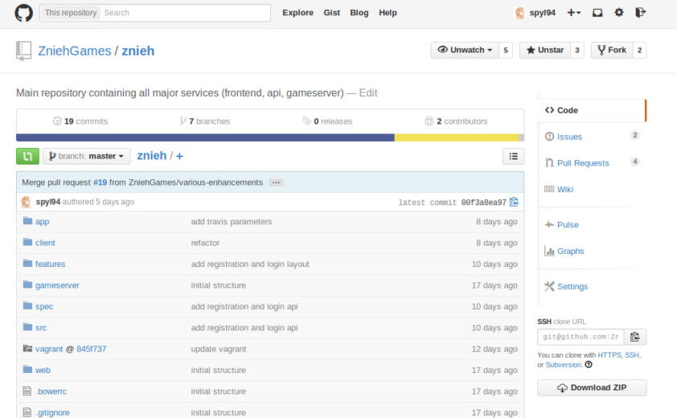
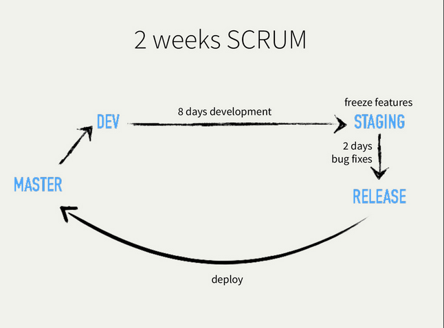
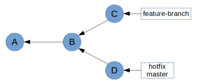
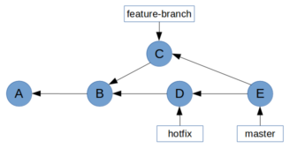
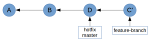

If you only knew the power of Git !
Une présentation par Aurélien David
Git & Github : les bases
Les branches
Pro Tips
Les slides sont énorméments insipirés par l'excellent :
Git ?
Gestionnaire de version
Enregistrement au cours du temps
Retour en arrière
Collaboration
Gestionnaire de version
décentralisé

Github
Créer un nouveau repo
Démonstration
Besoin d'aide ? GitHub vous explique tout !
Les 3 niveaux

Jusqu'ici tout est uniquement en local !
Le cycle de vie des états des fichiers

Vérifier l'état des fichiers
A lancer systématiquement pour savoir où on en est...
git status
Comprendre le stage
Le stage ou l’index : ce qui est validé pour partir au commit.
Permet de sculpter finement le commit à venir.
git add pathspec… = « prends pathspec en photo et mets ça dans le colis du prochain commit ».
Obligatoire pour versionner un nouveau fichier (untracked).
Ajouter toutes les modifications au stage
git add . ne suffit pas avant Git 2.0 : il ne prend en compte que le working directory, donc pas les suppressions.
Changes not staged for commit:
…
deleted: index.html
Untracked files:
…
home.html
Pour gérer les connus et les untracked, on utilise -A (--all)
$ git add -A && git status
On branch master
Changes to be committed:
…
renamed: index.html -> home.html
Voir le stage
$ git diff --staged
diff --git c/index.html i/index.html
index 5237399..85e642f 100644
--- c/index.html
+++ i/index.html
@@ -1,5 +1,5 @@
<!doctype html>
-<html>
+<html lang="fr">
Commiter, c'est valider le stage
$ git commit
On ajoute un message pour expliquer les modifications :
Capitalized, short (50 chars or less) summary
More detailed explanatory text, if necessary. Wrap it to about 72
characters or so. In some contexts, the first line is treated as the
subject of an email and the rest of the text as the body. The blank
line separating the summary from the body is critical (unless you omit
the body entirely); tools like rebase can get confused if you run the
two together.
Write your commit message in the imperative: "Fix bug" and not
"Fixed bug" or "Fixes bug." This convention matches up with commit
messages generated by commands like git merge and git revert.
Further paragraphs come after blank lines.
$ git commit -m 'commit message of a lazy developer'
Après un commit, le stage est vide.
Travailler en local
git status, git add, git diff et git commit en action !
Démonstration
Partager son travail
Lorsque votre vous estimez que votre travail est prêt, il ne reste qu'à envoyez vos commits sur le repo distant :
git push [nom-distant] [nom-de-branche]
$ git push origin master
Récupèrer depuis des dépôts distants
git fetch [nom-distant] permet de récupèrer les données à jour du projet, git push [nom-distant] [nom-de-branche] effectue un fetch puis fusionne automatiquement votre travail local avec le distant.
$ git pull origin master
Collaborer avec Git
Démonstration
Les branches
Pourquoi faire ?
Les branches sont utilisées pour développer des features isolées les unes des autres.
Par défault, la branche principale est master quand vous créez un repository.
Une branche par feature
Travaillez toujours dans une branche différente de master (ex: add-registration-form, fix-bug-666), puis fusionnez vos changements au sein de la branche principale.
Pas si vite la fusion...
Pull Request
=
Demande de fusion
=
Code + Issue + Code Comments
Idéal pour effectuer une revue de code !
Workflow #1 : simple

Ideal pour du déploiment continu
Workflow #2 : scrum
Facilite le déroulement du sprint
Nouvelle branche
La plupart du temps, quand on crée une branche, c’est pour bosser dessus direct.
(master) $ git branch feature
(master) $ git checkout feature
(feature) $
(master) $ git checkout -b feature
(feature) $
Notez que pour commencer à collaborer à une branche uniquement distante jusque-là, un checkout simple suffit.
(master) $ git branch -a
* master
origin/master
origin/topic
(master) $ git checkout topic
Branch topic set up to track remote branch topic from origin.
Switched to a new branch 'topic'
(topic) $
Lister les branches
Deux options utiles pour git branch :
-a liste les locales et les distantes
-vv ajoute les 1ères lignes de commit et, pour les trackées, l'état du tracking
(2014-octobre u+1) $ git branch -avv
* 2014-octobre abaca0f [origin/2014-octobre: ahead 1] Retrait vieilles demos
legacy 41b5bf7 [origin/legacy] Script Bash de packaging + déploiement du fichier Zip de debrief (exécutable par Chris seul vu les droits SSH requis)
master 0208acb [origin/master] Fix .groc.json
v2014 521350a [origin/v2014: behind 2] Backport changement cible lien plugins Backbone vers backplug.io
v2015 27b1791 [origin/v2015] MàJ docs annotés
remotes/origin/2014-octobre 10ad1b1 MàJ code source annoté
remotes/origin/bs3 49bc984 Tweaks en cours de session
remotes/origin/bs3-basis 650f025 Tweak export connectivity
…
Fusions
On ne fusionne que pour rappatrier de façon visible (bosse dans le graphe) un périmètre fonctionnel identifié (bugfix, feature, story, etc.).
(master) $ git merge awesome-feature
La branche est un descendant ? Empêchez le fast-forward :
(master) $ git merge --no-ff awesome-feature
Illustration de la différence au prochain slide !

Arbitrer un conflit
La plupart des conflits sont simples à arbitrer.
Il faut juste la bonne méthodo :
git statustout de suite (voir qui cloche)- Examen du 1er fichier conflictuel (éditeur ou
git mergetool) - Arbitrage des conflits du fichier*
git addpour marquer le fichier comme résolu- S’il reste des fichiers conflictuels, retour en (2).
- Sinon, finalisation avec
git commit.
Aspect du conflit
<<<<<<< HEAD
SVN est un outil de gestion de source largement répandu
et extrêmement pratique.
=======
SVN est un outil de gestion de source largement répandu
malgré sa profonde stupidité et la plaie de son usage.
>>>>>>> truth
Résolution
<<<<<<< HEAD
SVN est un outil de gestion de source largement répandu
et extrêmement pratique.
=======
SVN est un outil de gestion de source largement répandu
malgré sa profonde stupidité et la plaie de son usage.
>>>>>>> truth
Lâcher l’affaire ?
Si vraiment tu n’y arrives pas pour le moment (manque d’infos), annule la fusion proprement :
(master *) $ git merge --abort
(master) $
Rebase
Rejoue notre taf local sur la branche distante à jour.
(awesome-feature) $ git rebase origin master
Utile pour rappatrier des bugfix, feature, story, etc. au sein de notre branche !
Merge vs Rebase in action
Situation initiale
| Si on fait un merge... | Si on fait un rebase... |
|  |  |
Abusez du rebase mais ne faites qu'un merge final !
Pull ≠ Merge !
Par défaut, git pull finit par un merge. C’est super con.
Quand tu pull, tu ne fusionnes pas une branche tierce chez toi : tu récupères les mises à jour sur ta branche courante.
Pull = Rebase
Un pull devrait plutôt rejouer notre taf local sur la branche distante à jour : par définition, un rebase.
$ git pull --rebase origin master
Il faut juste faire attention à ne pas inliner par inadvertance un merge au sein du travail local.
Une bonne fois pour toutes :
$ git config --global pull.rebase preserve
Retoucher
le dernier commit
git commit --amend remplace par l’état courant.
Oublié de versionner une dépendance ?
$ git add vendor/scripts/underscore.min.js
$ git commit --amend --no-edit
Versionné un fichier sensible ?
$ git rm --cached config/database.yml
$ echo config/database.yml >> .gitignore && git add .gitignore
$ git commit --amend --no-edit
Foiré le message ?
$ git commit --amend -m 'Le message ni énervé ni bourré de fautes'
Le stash… mais bien
Histoire d’avoir les untracked et un message utile :
(master *+%) $ git stash save -u 'migration BS3'
Saved working directory and index state On master: migration BS3
HEAD is now at 8a5a383 Trackers GA asynchrones
(master $) $
Attention ça stashe
Pour récupérer le stash, évitez apply, préférez un pop :
(master $) $ git stash pop
…
(master *+%) $
pop tente l’apply, et s’il marche enchaîne avec drop. Rien de pire que de laisser traîner un stash réintégré…
Des pushes choisis
Et pas trop fréquents
Faut pas pousser
les autres branches
Par défaut, sur un git push seul, Git va tenter :
Avant 2.0 : toutes les branches trackées* de même nom**
Depuis 2.0 : l’actuelle si trackée de même nom**
Ce qu’on veut : l’actuelle, quel que soit le nom distant.
$ git config --global push.default upstream
Push initial
Une bonne 1ère impression
La première fois que vous poussez une branche que vous voulez tracker ensuite, pensez à caler à la volée le tracking :
(stats-v3) $ git push -u origin stats
Counting objects: 5, done.
Delta compression using up to 4 threads.
Compressing objects: 100% (3/3), done.
Writing objects: 100% (5/5), 488 bytes | 0 bytes/s, done.
Total 5 (delta 0), reused 0 (delta 0)
To git@github.com:tdd/private-tests.git
* [new branch] stats -> stats
Branch stats set up to track remote branch stats from origin.
Nettoyer avant push
Le bordel OK, mais chez toi
Réflexe pré-push : nettoyer ton historique local, lequel est forcément plus ou moins en bordel.
$ git lg @{u}.. # show all commits that you have locally but not upstream
$ git rebase -i @{u}
Le rebase interactif nous permet de mettre au propre nos travaux locaux avant de partager tout ça avec les copains.
Raison de plus pour ne pas faire de pushes trop souvent. On pond des commits souvent (10–30 ×/j), mais on push plus rarement (2–3 ×/j)
Danger : changer un historique déjà pushé ! A éviter sauf pour squash ces commits avant un merge.
Pro Tips
Un fichier pour les ignorer tous !
On a pas envie de polluer le repo avec les librairies, les binaires bien lourds, ou encore d'y stocker notre config.
.gitignore
vendor/
node_modules/
app/config/parameter.yml
Liste les fichiers laissés intentionnellement untracked./!\ Les fichiers déjà ajouté au stage ne sont pas affectés !
gitignore.io
Des commits atomiques
Atomiques pourquoi ?
Ne pas mettre n’importe quoi dans vos commits...
1 commit = 1 périmètre réduit, d’un coup, ni plus, ni moins.
Pour y arriver, il faut maîtriser add et reset, mais aussi diff, show et bien entendu commit.
Un statut détaillé
Voyez le détail des nouveaux fichiers, en profondeur.
$ git status
…
Untracked files:
(use "git add ..." to include in what will be committed)
vendor/
…
$ git config --global status.showUntrackedFiles all
$ git status
…
Untracked files:
(use "git add ..." to include in what will be committed)
vendor/scripts/bootstrap.min.js
vendor/scripts/jquery.min.js
vendor/scripts/underscore.js
…
Dépolluer le diff
Les whitespaces, le plus souvent, OSEF.
$ git diff
…
<!doctype html>
-<html>
+<html lang="fr">
<head>
- <meta charset="utf-8">
- <title>Git ProTips</title>
+ <meta charset="utf-8">
+ <title>Git ProTips</title>
…
$ git diff -w
…
<!doctype html>
-<html>
+<html lang="fr">
<head>
…
Fragments de fichiers
Qui a dit qu’on devait stager tout le fichier d’un coup ?
$ git add -p index.html
…
<!doctype html>
-<html>
+<html lang="fr">
<head>
…
Stage this hunk [y,n,q,a,d,/,j,J,g,e,?]? y
…
<h1>Git ProTips</h1>
+ <footer>© 2014 Ma Boîte</footer>
…
Stage this hunk [y,n,q,a,d,/,K,g,e,?]? n
Juste critique parce que dans la vraie vie, on a toujours 2–3 sujets distincts en cours dans un même fichier…
Unstage
Sortir un snapshot du stage : git reset.
$ git reset index.html
Unstaged changes after reset:
M index.html
Annuler tout le stage :
$ git reset
Unstaged changes after reset:
M index.html
Unstage partiel
C’est comme pour l’ajout : on peut n’unstager que certains fragments.
$ git reset -p index.html
…
…
<!doctype html>
-<html>
+<html lang="fr">
<head>
…
Unstage this hunk [y,n,q,a,d,/,j,J,g,e,?]? n
…
<h1>Git ProTips</h1>
+ <footer>© 2014 Ma Boîte</footer>
…
Unstage this hunk [y,n,q,a,d,/,K,g,e,?]? y
Visualiser un commit, un snapshot
git show [object] permet d’afficher au mieux un commit (par défaut HEAD), une arbo, un snapshot (blob)…
$ git show # ou explicitement : git show HEAD
commit 8a5a383
Author: Christophe Porteneuve <tdd@tddsworld.com>
Date: Sun Oct 26 15:04:17 2014 +0100
Premier index
diff --git a/index.html b/index.html
…
Le contenu de app/initialize.js en branche legacy ?
$ git show legacy:app/initialize.js
'use strict';
…
Merci !
Et que Git soit avec vous
Aurélien David